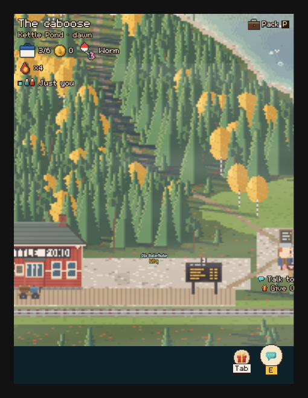
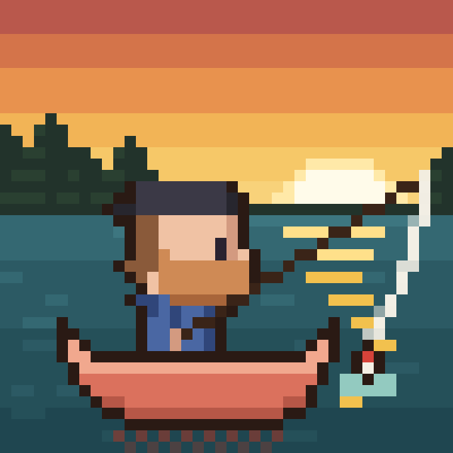

About
Paddle out, cast a line, and see what's biting. Cast & Canoe is a cozy multiplayer pixel fishing game that runs entirely in your web browser — no download, no install. Explore five lakes, each with its own fish, wildlife and secrets, fish alongside friends on shared lakes or book a private camp of your own, and fill your journal, aquarium and cabin with what you find. Every catch is one of a kind. The art is pixel art made by hand, the sounds are synthesised, and the fish are real fish from real lakes.
Fact Sheet
| Game | Cast & Canoe™ |
|---|---|
| Developer | Canoe |
| Price | Free |
| Platform | Web browser — computers & phones, no download |
| Players | Solo or with friends on shared lakes / private camps |
| Release status | Live & in active development, v0.42.20 |
| Contact | castandcanoe@gmail.com |
| Website | https://castandcanoe.com |
Features
- Fish together: shared lakes with friends, live chat, emotes, a wave and a dance.
- Private camps: book a lake of your own and invite friends with a simple code and link.
- Journal & badges: track every species, discovery and milestone across all five lakes.
- Catch cards: every catch is one of a kind, pinned up on its card with ribbons for its awards.
- Your own aquarium & cabin: keep your favourite catches and fill a cabin with what you find.
- A pet at every lake: a cat, a pair of ducks, a burro and a pelican are all waiting for a treat.
- Campfire jam: make music together around the fire — guitar, ukulele and harmonica.
- A guided first hour: Andre and Brooke, the lakes' guides, walk new anglers through their first fish, first canoe trip and first train ride.
The Lakes
- Kettle Pond — the hub where every visit starts, with the station, the guides, and Old Kettle, a huge pike, down in the Deep Hole.
- Reynolds Ponds — beaver-counting country, home to Shale the grey cat on the dock.
- West Hawk — trolled for thirty summers by Dale; his ducks Port and Starboard follow anyone carrying duck feed.
- Slickrock — desert water, home to Juniper, Wade's burro, who brays at thunder.
- The Bayou — a cypress bayou with a bait shop, hammocks, and Boudin the pelican on Gus's deck.
Screenshots
Screenshot captures are in preparation — 1 of 6 slots filled so far, the rest will drop in as they are captured.

Screenshot: A catch card moment (fish pinned up with award ribbons) — to be captured
Screenshot: A private camp with friends — to be captured
Screenshot: Campfire jam at night — to be captured
Screenshot: Shale the cat on Reynolds dock — to be captured
Screenshot: Paddling a canoe to Pine Island — to be captured
Key Art

Links
- Play: castandcanoe.com
- YouTube: @CastAndCanoe
- Instagram: @castandcanoe
- Facebook: Cast & Canoe Page
- TikTok: @cast.and.canoe